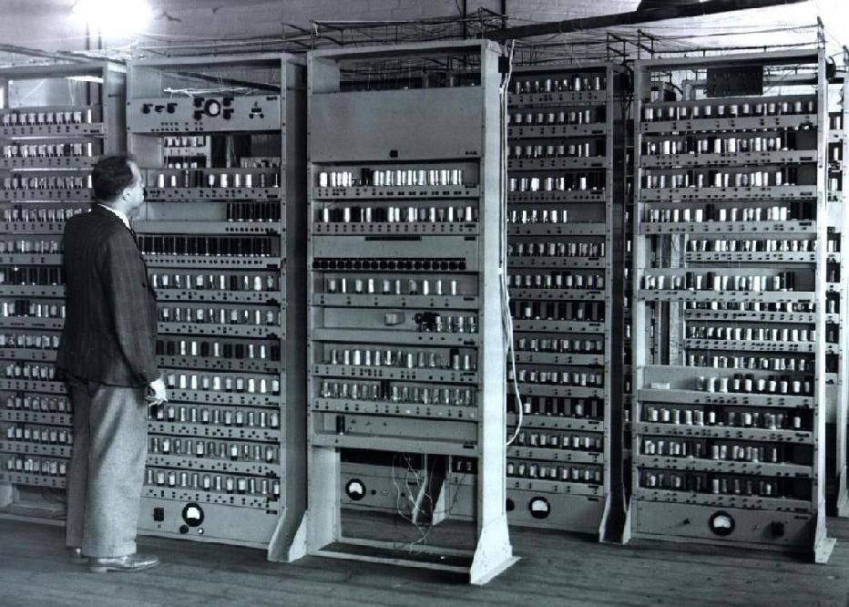
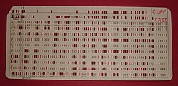
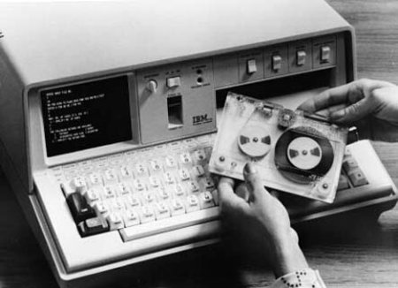
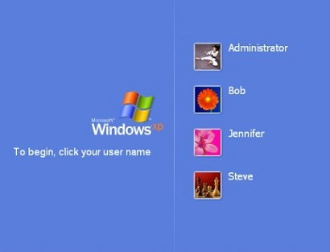

Historia de los Sistemas Operativos

Origen de las Computadoras
Las primeras computadoras surgieron en la década de 1940. Eran máquinas enormes que utilizaban válvulas al vacío y ocupaban habitaciones completas. No existían sistemas operativos; los programas se ejecutaban directamente sobre el hardware.

Programación Manual
En sus inicios, los programas se cargaban mediante tarjetas perforadas. Cada tarea debía ejecutarse manualmente, lo que hacía el proceso lento y poco eficiente.

Sistemas por Lotes (Batch)
En los años 50 y 60 aparecieron los primeros sistemas por lotes, que permitían ejecutar varios trabajos automáticamente sin la intervención constante del usuario.

Tiempo Compartido
Posteriormente surgieron los sistemas de tiempo compartido, que permitían que varios usuarios utilizaran la misma computadora al mismo tiempo, marcando el inicio de los sistemas multiusuario.